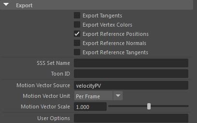
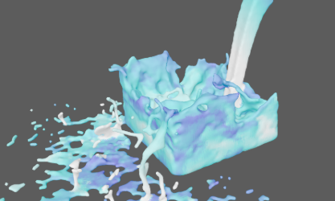
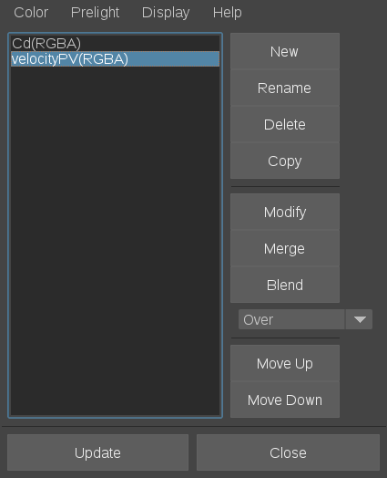
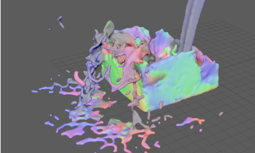
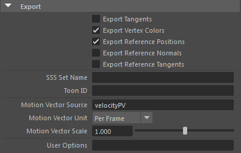
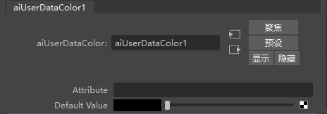
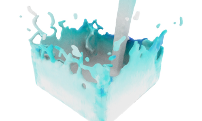

默认情况下，MtoA 不会为具有变化拓扑的网格的 Alembic 缓存执行运动模糊处理。但是，MtoA 可以使用速度属性作为源，使用运动向量从含有变化拓扑的网格推导运动模糊数据。
使用此速度属性作为源来推导运动模糊数据。您必须使用速度作为逐点向量导出时的名称。MtoA 将使用顶点速度属性来计算运动模糊。例如，来自 Houdini 的点向量属性可能称为“v”。默认名称是“velocityPV”。
选择“逐帧”(Per Frame)或“每秒”(Per Second)。
用来生成时间缩放效果的浮动比例字段（默认值为 1）。
这个简短的教程将逐步说明以下过程：从 Houdini 导出运动数据存储在顶点颜色通道中的 Alembic 文件，并使用 MtoA 在 Maya 中对其进行渲染。我们将使用 velocityPV 属性转化逐顶点属性，借助这些属性，MtoA 可以将运动模糊应用于 Alembic 几何体。此几何体的拓扑在不同帧之间存在变化。
我们将使用来自 Houdini 的 Alembic 文件。它将 V 通道中的点速度转换为点颜色属性 velocityPV，用于在点编号处在运动中的网格上计算运动模糊，有关生成兼容 Alembic 文件的详细信息，请单击此处。
在 Maya 中打开 Alembic 文件 (.abc)。
您不能使用菜单执行该操作，因为没有选项可用于导入缓存中的颜色数据，请改用以下 MEL 脚本，并更改 fluid.abc 文件的保存路径。
AbcImport 命令
AbcImport -mode "import" -rcs "C:/data/Tutorials/velocity_data_attribute/fluid.abc" 
在 Maya 中打开 Alembic 文件
 

启用速度模糊时，转换器只会导出两个关键帧。
颜色信息也可以从 Houdini 导出到 Alembic 文件，提取后，在 Maya 中使用 MtoA 进行渲染。
创建一个 Ai UserDataColor 节点，并将其连接至一个标准曲面着色器。将此着色器指定给几何体。
将 Cd 添加到 aiUserDataColor 节点的“颜色属性名称”(Color Attr Name)属性。
 